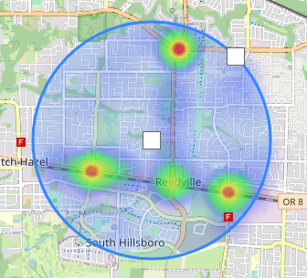

The intention of this project was to provide a way to visualize traffic accidents within the countires of Washington and Clackamas in Oregon. This map is a heat map of every traffic accicent injury or non injury between the years 2014 and 2016. This allows the user to view hot spots with the county, spot trouble intersections or determine of fire stations are placed appopiately around the county with relation to traffic accident incidents. This data was provided by the Washington County Coordinated Communications Agency (WCCCA).
This was created for Arizona State University CSE412 as a semester project during Fall 2021
The side bar (The thing you're looking at) has icons on the left side of the panel. Clicking these icons switches between pages, currently theres 4 pages which are Infomation, Filtering, Data View, and Settings. You are currently reading the infomation page.
This feature will allow the user to place down a movable circle with an adjustable radius. Once placed the circle will restrict the incidents within the bounds of the circle providing a more focused view of the heat map to a certian geographical area. 
The circle can be added to the map by pressing the add circle button (). Once added the circle can be resized and dragged around the map which will dynamically filter the incidents automatically. You can use both the date filter and area filter simultaneously.
The circle can be removed by pressing the remove circle button () this will reset the map to before applying the area filter. This does not reset the date filters.
My purpose
Adding it
Removing it
Data goes here
Settings goes here
Technology used goes here
Credits used goes here
This should include screenshots or icons of the things you're talking about.
| {{ hdr }} | ||||
|---|---|---|---|---|
| {{ x.received }} | {{ x.callnum }} | {{ x.description }} | {{ x.address }} | |
| Unit | Dispatched | En-route | On-scene | Clear |
| {{ unit.name }} | {{ unit.dispatched }} | {{ unit.enroute }} | {{ unit.onscene }} | {{ unit.clear }} |
| No unit data available for accident. | ||||
Radius:
Max Opacity:
Scale Radius:
Local Extrema: